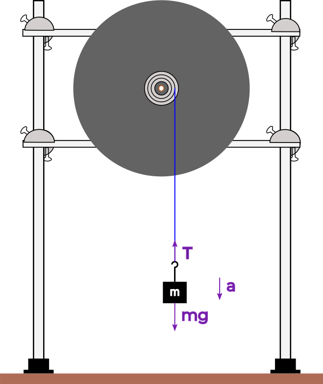
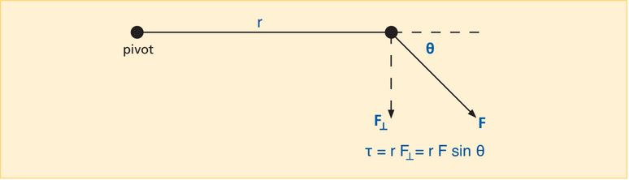

In your study of linear mechanics, you have become familiar with terms like position and displacement (along a coordinate x, y or z), velocity (v), acceleration (a), mass (m), and so on. In rotational mechanics, we measure similar quantities such as angular displacement, angular velocity and angular acceleration.
The basic unit of measurement in rotational mechanics is the radian. It is defined as the angle that is subtended by an arc equal to the radius of the circle on which it lies.
You ask, “What is the value of a radian?” Perhaps this will help. You buy a 15″ pizza. You cut a piece of string so that it is 15 inches long, fold it exactly in half and make a mark at the midpoint. Now you use it to find the center of the pizza, and you make a straight cut from there to the edge of the pizza. Now you cut the string exactly in half, take one of the two 7.5-inch pieces, place one end of it exactly at the outer end of the cut you have just made, and carefully lay it along the edge of the pizza. From the other end of the string, you now make a second straight cut from that end of the string to the center of the pizza. You now have a slice whose length along the crust (arc length) equals the length of each side (the radius of the pizza, r). The angle subtended by this arc is thus 1 radian, but now you would like to know how many radians there are in a circle, and also, what a radian corresponds to in degree measure.
You don’t have a protractor with you, but you do have a clean napkin and a pen. You note that the circumference of the pizza, C, equals 2πr, and that a full circle subtends an angle of 360°. This means that there are 2π radians in 360°. Doing the arithmetic, you find that 360°/(2π) (= 180/π) = 57.3°. Hence, 1 radian = 57.3°. (You measured the diameter and radius rather precisely.) Note that because the radian is a ratio of two lengths, it is dimensionless.
Now let’s introduce the cast for rotational mechanics. First is the unit of angular measure, which as we noted above, is the radian. Next is angular displacement, for which we use the Greek letter θ (theta), and which we measure in radians. Third is angular velocity, whose symbol is ω (omega). This is the time rate of change of angular displacement (), and it has the units of rad/s (radians/s). Next is angular acceleration, α (alpha). This is the time rate of change of angular velocity (). It has the units rad/.
Note that in the text above, the bold symbols are vectors. ω and α have both magnitude and direction. The direction is along the axis of rotation, and the sense is in the direction in which your right thumb points when you curl the fingers of your right hand in the direction of the rotation. Since it is only the sense that changes, and since we are not so much concerned with direction, for convenience we will use the scalar forms of the equations in which all these variables appear.
Another member of the cast, similar to mass, is something we call the moment of inertia. Its symbol is I. In proportion to its mass, an object possesses inertia; it resists change in its linear motion. Similarly, according to its mass and how that mass is distributed about a particular axis of rotation, an object resists change in its rotational motion about that axis. The farther a portion of the mass is from the rotation axis, the greater its moment, or resistance to rotation. We will return to this later.
By now, you have probably noticed similarities between the quantities that we use to describe linear motion, and those that we use to describe rotational motion. To the list we have so far, we will add three more items. Linear momentum (p = mv), in rotation becomes angular momentum (L = Iω), force (F = ma) becomes a torque (symbolized by τ (tau); τ = Iα), and kinetic energy (K = ) becomes rotational kinetic energy (KIω). Note that whereas linear momentum is in kg·m/s, angular momentum is in kg·m/s. Where force has units of newtons (kg·m/s), torque has units of newton·meters. (We shall see later why this is so.) Linear kinetic energy and rotational kinetic energy have the same units (J, which are N·m or kg·m/s). The table below shows all of these quantities, with their expressions:
| Linear Motion | Rotational Motion |
|---|---|
| Displacement, x | Angular Displacement, θ |
| Velocity, v | Angular Velocity, ω |
| Acceleration, a | Angular Acceleration, α |
| Mass, m | Moment of Inertia, I |
| Momentum, p = mv | Angular Momentum, L = Iω |
| Force, F = ma | Torque, τ = Iα |
| Kinetic Energy, K = mv | Rotational Kinetic Energy, KIω |
We see that for each quantity involved in the description of an object’s linear motion there is an analogous quantity for the description of its rotational motion. Whereas in linear dynamics you would find the net force on an object to determine its acceleration (or vice versa), in rotational dynamics you find the net torque on an object to determine its rotational acceleration (or vice versa). Just as linear momentum is conserved, so is angular momentum.
Even though mass is analogous to moment of inertia, we may not be able to measure them the same way. To measure mass, we can merely place the object on a balance. As noted above, however, an object’s moment of inertia depends on how its mass is distributed about the axis about which it is rotating. If the object has uniform density and is symmetrical, it may be possible to measure its mass, and then based on its shape, calculate the moment of inertia. If this is not possible (perhaps the object has an odd shape or is of varying density), we must measure the moment of inertia by applying a torque to rotate it, and then by measuring its acceleration, find its moment of inertia. In this lab, we will do both of these things and compare the results.
As noted above, the farther a portion of a rotating object is from the rotation axis, the greater its moment. But what is this moment? If the object is rigid, all points on it have the same angular speed, ω, but each has an instantaneous linear speed, v = ωr, where r is its distance from the rotation axis. The angular momentum, l, for the special case of a particle going in a circle around a central point at a distance r (as do all the mass points in our rotating object) equals mvr. Since v = ωr, this equals mrω. This angular momentum is often called the moment of momentum. If we add the momenta for all the mass points in our rotating object, we have L = Σmrω. Since ω is the same for all points on the object, L =(Σmr)ω. The sum in parentheses is the moment of inertia, which we call I, and L = Iω.
We can also see this by taking the kinetic energy of each mass point, which is (1/2)mv. From the equations above, we see that this also equals (1/2)mrω. The total kinetic energy for the rotating object is the sum for all points on it: K = Σ(1/2)mrω. We can pull out the (1/2), and since ω is the same for all points, this is K = (1/2)[Σmr]ω. The sum in brackets is I, the moment of inertia. Its units are kg·m (or in cgs units, g·cm).
For our dynamic measurement of the moment of inertia, we will use a vertically-mounted turntable that has a hub attached at its center, which has three grooves of different radius, around which one can wind a string. A mass hanging from the free end of the string provides tension, which exerts a torque on the turntable, thus causing it to rotate. The figure below shows a schematic of the apparatus:

By measuring the time it takes the mass to fall from its initial height to the table top (or some reference line just above it), we can find a, its (linear) acceleration. From this we can calculate α, the angular acceleration of the turntable. From the weight of the mass, and its linear acceleration, we can find T, the tension in the string. Once we know all these things, we can calculate the torque, τ, and from τ = Iα, find I, the moment of inertia of our turntable platter.
The torque exerted on an object by a force F around a pivot point is equal to the distance r from the axis of rotation to where the force acts multiplied by the component of force perpendicular to the position vector . If the force is perpendicular to the position vector, we call the distance r the lever arm.

When we attach a mass to the string on the turntable and release it, the force exerting the torque on the turntable is the tension in the string.
Question 1
a) What is the formula for the torque on the turntable in terms of tension in the string and the lever arm distance ?
b) What is the tension in the string if the turntable is held fixed, with the mass hanging from the pulley (i.e. the mass is stationary)?
b) When the mass is falling, what is the tension in the string? Use Newton's second law to determine the tension in the string as a function of , the falling mass, , the acceleration due to gravity, and , the linear acceleration of the falling mass. Refer to Figure 1.
When you release the mass, it accelerates toward the earth with acceleration, a. To find this acceleration, we measure the time it takes for the mass to fall to the floor from a known height, h. We then use the following equation to calculate a. (Because the mass starts from rest, we can ignore the vt term, which equals zero.):
The tangential acceleration of a point at the lever arm distance is:
where a is the acceleration of the falling mass, r is the lever arm distance, and α is the angular acceleration of the turntable.
Question 2
Show that the equation is consistent in terms of units. Note: Radians can be ignored as a unit.
1) The three grooves in the turntable hub have radii of , and cm. We will only be using one value of the radius, cm. Record the radius of the one we will use. This will be your lever arm r since the tension is perpendicular to it.
Question 3
What effect does the diameter of the string have on the lever arm? Explain why we can ignore this effect.
2) We will select and record six test masses (one at a time). To each mass, we must add the mass of the hanger, which is g.
3) Before we release each mass, we will measure and record its height of cm above the floor.
4) We will release the mass, then measure and record the time it takes to strike the floor. Use a stopwatch, online timer or a clock to measure the time from the video.
5) Use this time and the equations above, to calculate the linear acceleration of the mass a, the angular acceleration of the platter , the tension , and the torque .
You should make a table for the data that you will collect, with space for values that you will need to calculate. Given the steps above, you can see that you will need a column each for r, m, h, t, a, α, T and τ. Per step 6) below, you will need six rows for data.
6) We will repeat this procedure (steps 1-5) for all our different masses.
Exercise 1
The following video will show steps above being performed.
1) Watch the video, and record for each mass, r, m, h and t
2) Fill in your table by calculating for each mass, a, α , T and τ.
3) Now take the values you obtained for τ and α, and plot them on a graph of τ vs. α.
4) Recall that at the beginning of this lab you learned
where I is the moment of inertia. Calculate I (with proper units) from the slope of your graph.
Question 4
What is the measured moment of inertia for the rotating turntable platter?
As we noted earlier, the moment of inertia of an object depends not only on the mass of the object, but also on how the mass is distributed around the axis of rotation. If an object is symmetrical, we can derive an expression for the sum of the moments described above. For a disc, like the plater of your turntable, the moment of inertia is:
where m is the mass of the disc and R is the radius of the disc. Do not confuse the radius of the disc with the lever arm where the tension is applied. We will lift the platter off the apparatus and weigh it. We will also measure its diameter.
Exercise 2
1) The video below shows the measurement of the mass and the diameter of the turntable platter. Record these values.
2) Given the mass of and radius of of the turntable platter, use the equation above to calculate its moment of inertia. (Remember to use the radius, and not the diameter.)
Question 5
a) How do your two calculated moments of inertia compare to each other?
b) What assumptions did we make when we used the mass and dimensions of the platter to calculate its moment of inertia?
c) In what way could these cause a discrepancy between the two values you obtained for the moment of inertia?
d) What else might cause a discrepancy between these two values?
Exercise 3
Write a brief statement summarizing the main points of this lab.